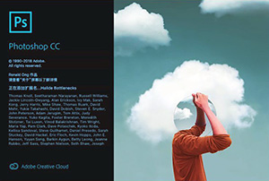
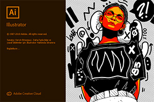
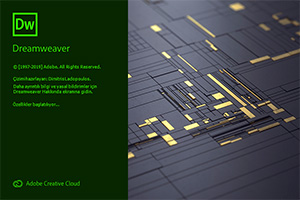
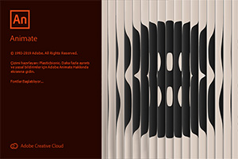

 Photoshop oldukça fazla gelişmiş yetenekleri olan bir resim işleme ve düzenleme programıdır. İlk olarak 1987 yılında o zamanlar Michigan Üniversitesi doktora öğrencisi olan Thomas Knoll tarafından geliştirilmeye başlandı. Thomas aslında bu programı sadece bir okul ödevi olarak hazırladı. Ancak programın yeteneklerini görenler onu bu konuda yönlendirerek kurumsal şirketlerle görüşmesi gerektiğini vurguladılar.
Photoshop aslında piksel tabanlı bir resim işleme düzenleme programıdır, yani dijital fotoğrafçılıkla uğraşan birisi için bu program aslında olmazsa olmazdır. Photoshop programıyla dijital yani bilgisayar ortamında depolanmış bir fotoğrafı düzenleyebilirsiniz. Peki bu cümledeki “Düzenleme” ifadesinin içerisinde neleri sayabiliriz? Örneğin, boyutunu küçültme, parlaklığını arttırma, istenmeyen bir cismi resmin içerisinden kaldırma, kontrastını arttırma, bulanıklığını giderme, resme persfektif kazandırma gibi daha birçok uygulama.
İşte tüm bu uygulamaları photoshop programıyla çok kolay ve hızlı bir şekilde yapabilirsiniz. Yıllar geçtikçe gelişmiş sürümlerde bu anlamda çok sayıda eklenti program içerisine entegre edildi. Filtreler yardımıyla tek dokunuşlar resminize çok farklı efektler verebiliyorsunuz. Yıllar önce bu uygulamalar çok zorken şimdi photoshop’ la bu uygulamalar çok kolay hale getirildi.
 Adobe firmasının geliştirdiği vektörel tabanlı bir grafik tasarım programıdır. Gelişmiş vektörel çizim imkanı sağlayan özellikleri ile öne çıkan Illustrator, aynı zamanda dünyada profesyoneller tarafından en çok kullanılan tasarım programlarından biridir. Gerçek fotoğraflar yerine vektörler ile oluşturacağınız herhangi bir tasarımda Illustrator programını gönül rahatlığıyla kullanabilirsiniz. Illustrator'un barındırdığı çok yönlü çizim araçları ile özgün vektörel çizimler yapabilir, illüstrasyonlar ve tipografiler oluşturabilirsiniz.
Örneğin; grafik tasarımı, web tasarımı, site arayüzleri, firmaların; kartvizit, afiş, broşür, logo, banner tasarımı gibi kurumsal kimlik çalışmalarının tümü için Illustrator programından yararlanılabilir. Bu gibi tasarımların büyük boyutlarda baskı uygulamalarında ise yine Illustrator programına başvurulabilir. Çünkü, Illustrator'de hazırlanan çalışmaların ölçeklendirilmesi çok rahat bir şekilde yapılırken görüntüde bozulma ve kalite düşüklüklerinin önüne geçilir. Adobe Illustrator'de oluşturulan firma logosu küçük bir kartvizit üzerinde kullanılırken aynı zamanda çok büyük boyutlarda bir reklam panosu afişine de aynı kalitede basılabilir. Bu sayede oluşturulan tasarım üzerindeki en ufak ayrıntıya kadar her detay net bir şekilde görüntülenebilir ve gözden kaçmamış olur.
 Dreamweaver; İlk olarak Macromedia şirketinin ürettiği, daha sonra Adobe şirketinin Macromedia'yı satın almasından dolayı adı Adobe Dreamweaver olarak değişen bir web sayfası geliştirme, kodlama yazılımıdır. Dremweaver şu anda bir çok web tasarımcının kullandığı bir programdır. Bunların yanı sıra çeşitli programlar da var. Fakat en popüler program Dreamweaver'dır. Dreamweaver ile yapılabilecek dosya türleri ; PHP , ASP VB Script , CSS , CouldFusion , HTML , JavaScript , XML v.b.
Dreamweaver web tasarım yazılımı, web siteleri ve mobil uygulamalar oluşturma ve düzenlemeye yönelik kolay anlaşılır görsel bir arabirim sunar. Sayfalarınızı platformlar arası uyumluluk için tasarlanmış akıcı ızgara mizanpajı özelliğini kullanarak oluşturabilirsiniz. Tasarımlarınızı yayınlamadan önce çok ekranlı önizleme panelinde göz atabilirsiniz. Dreamweaver yazılımındaki arttırılmış FTP performansı sayesinde kapsamlı dosyaları daha verimli bir biçimde sunucunuza aktarabilirsiniz. Çalışmalarınızı HTML5 ve CSS3 kullanarak daha hızlı ve verimli çalışarak geliştirebilirsiniz.
 Önceleri Adobe Flash Professional bilinen Adobe Animate CC; vektör animasyonları, reklamlar, multimedya içeriği, geniş kapsamlı deneyimler, uygulamalar, oyunlar ve daha fazlasını zaman çizelgesi tabanlı bir geliştirme ortamında oluşturmanıza olanak sağlayan bir programdır.. Animate; HTML5 Canvas ve WebGL gibi çoklu çıktılar için yerel destek sunar, ayrıca Snap.SVG gibi özel biçimleri destekleyecek şekilde kapsamlıdır.
Animate ayrıca Flash formatları oluşturup yayımlamayı ve Adobe AIR uygulamalarını paketlemeyi destekler. Animate'in çıktı biçimleriyle ilgili sunduğu esneklik, eklenti ihtiyacı olmadan içeriğinizi istediğiniz yerde görüntüleyebilmenizi sağlar. Animate sınıfının en iyisi çizim ve illüstrasyon araçları sunmaktadır.